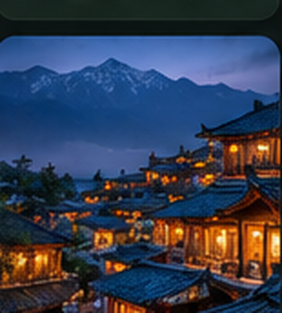

◢◣
山水间
发现
攻略
目的地
AI 行程
⌕ 搜索攻略、景点、城市、作者或话题...
◌
♧
林
MY JOURNEY · 智能行程工作台
成都三日慢行计划
来自 3 篇已收藏攻略 · 关联 6 个景点 · 可手动调整路线与预算
保存我的行程 ✓
时间轴
地图路线
预算汇总
参考攻略
全部修改仅保存到我的私人行程
Day 1 · 老城与街巷
11 月 15 日
09:00
宽窄巷子
参考：成都 Citywalk 攻略
拖动排序 ⋮⋮
12:00

人民公园
建议停留 90 分钟
修改 ✎
15:00
江边慢行
路线可手动调整
删除 ×
＋ 添加地点
Day 2 · 人文与美食
11 月 16 日
已安排武侯祠、锦里与夜间自由活动 · 点击展开编辑
M16 视觉参考 · 示例数据 · 非实际页面